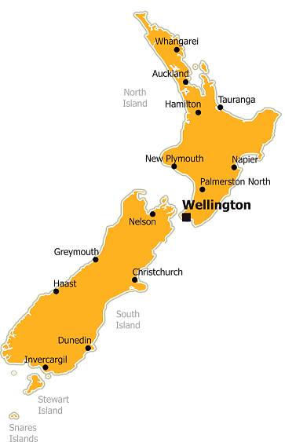

Introdução
Bem-vindo à Nova Zelândia! Um país de paisagens deslumbrantes, cultura vibrante e aventura sem fim.
A Nova Zelândia é um país insular localizado no sudoeste do Oceano Pacífico, compreendendo duas ilhas principais: a Ilha Norte (Te Ika-a-Māui) e a Ilha Sul (Te Waipounamu), além de várias ilhas menores. Sua capital é Wellington. Os idiomas oficiais são o inglês e o maori (Te Reo Māori). A população da Nova Zelândia é de aproximadamente 5 milhões de habitantes.
